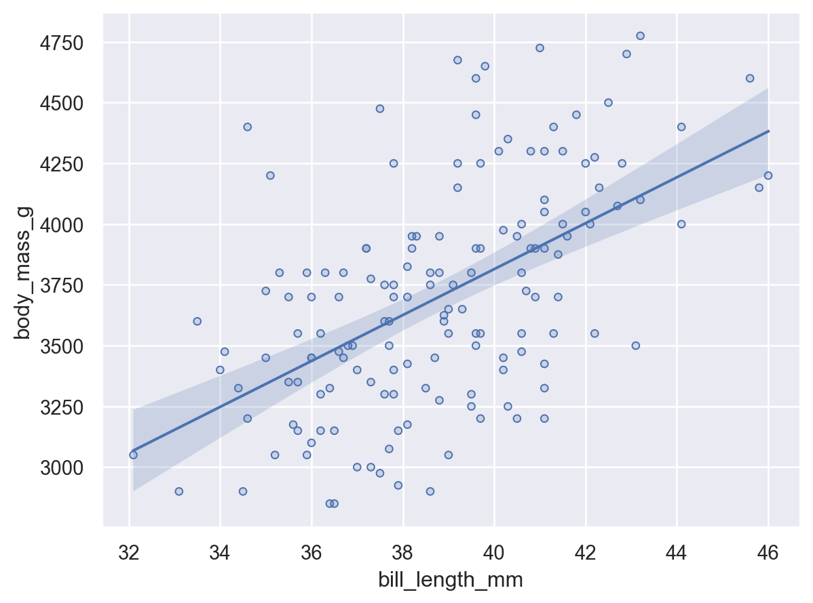

seaborn.objects Recipes#
# Pandas
import pandas as pd
import numpy as np
pd.set_option("mode.copy_on_write", True)
# Seaborn.objects
import seaborn.objects as so
import seaborn as sns
# Statsmodels for regressions
import statsmodels.formula.api as smf
# Filter out FutureWarnings
import warnings
warnings.simplefilter(action="ignore", category=FutureWarning)
# Get Penguins Dataset
penguins = sns.load_dataset("penguins")
Regression with Confidence Intervals#
def get_reg_with_ci(data, yvar, xvar, alpha=0.05):
# Build a grid into which predicted values can be placed.
x = data.loc[pd.notnull(data[yvar]), xvar]
xmin = x.min()
xmax = x.max()
step = (xmax - xmin) / 100
grid = np.arange(xmin, xmax + step, step)
predictions = pd.DataFrame({xvar: grid})
# Fit model, get predictions
model = smf.ols(f"{yvar} ~ {xvar}", data=data).fit()
model_predict = model.get_prediction(predictions[xvar])
predictions[yvar] = model_predict.summary_frame()["mean"]
predictions[["ci_low", "ci_high"]] = model_predict.conf_int(alpha=alpha)
return predictions
y_hats = get_reg_with_ci(
penguins[penguins.species == "Adelie"], xvar="bill_length_mm", yvar="body_mass_g"
)
def plot_regression_w_ci(data, yvar, xvar, alpha=0.05, dots=True):
"""
Returns a seaborn.objects scatter plot with Dots and a linear
regression with confidence intervals.
:param alpha: Confidence inteval alpha.
:param dots: Should data points be included in plot?
"""
# missings get dropped before `model` object created
# also `model_predict` ends up with new index, causing index
# issues if rows change. So...
data = data[pd.notnull(data[yvar]) & pd.notnull(data[xvar])].reset_index()
# Fit model
model = smf.ols(f"{yvar} ~ {xvar}", data=data).fit()
# Get predicted values
model_predict = model.get_prediction(data[xvar])
data["predicted_" + yvar] = model_predict.summary_frame()["mean"]
data[["ci_low", "ci_high"]] = model_predict.conf_int(alpha=alpha)
# Make plot.
plot = so.Plot(data, x=xvar)
if dots:
plot = plot.add(so.Dots(), y=yvar)
# Add overlay later so y-var name is from dots.
plot = plot.add(so.Lines(), y="predicted_" + yvar).add(
so.Band(), ymin="ci_low", ymax="ci_high"
)
return plot
plot_regression_w_ci(
penguins[penguins.species == "Adelie"], xvar="bill_length_mm", yvar="body_mass_g"
)

so.Plot?
Init signature:
so.Plot(
*args,
data=None,
x=None,
y=None,
color=None,
alpha=None,
fill=None,
marker=None,
pointsize=None,
stroke=None,
linewidth=None,
linestyle=None,
fillcolor=None,
fillalpha=None,
edgewidth=None,
edgestyle=None,
edgecolor=None,
edgealpha=None,
text=None,
halign=None,
valign=None,
offset=None,
fontsize=None,
xmin=None,
xmax=None,
ymin=None,
ymax=None,
group=None,
)
Docstring:
An interface for declaratively specifying statistical graphics.
Plots are constructed by initializing this class and adding one or more
layers, comprising a `Mark` and optional `Stat` or `Move`. Additionally,
faceting variables or variable pairings may be defined to divide the space
into multiple subplots. The mappings from data values to visual properties
can be parametrized using scales, although the plot will try to infer good
defaults when scales are not explicitly defined.
The constructor accepts a data source (a :class:`pandas.DataFrame` or
dictionary with columnar values) and variable assignments. Variables can be
passed as keys to the data source or directly as data vectors. If multiple
data-containing objects are provided, they will be index-aligned.
The data source and variables defined in the constructor will be used for
all layers in the plot, unless overridden or disabled when adding a layer.
The following variables can be defined in the constructor:
|x|, |y|, |color|, |alpha|, |fill|, |marker|, |pointsize|, |stroke|,
|linewidth|, |linestyle|, |fillcolor|, |fillalpha|, |edgewidth|,
|edgestyle|, |edgecolor|, |edgealpha|, |text|, |halign|, |valign|,
|offset|, |fontsize|, |xmin|, |xmax|, |ymin|, |ymax|, |group|
The `data`, `x`, and `y` variables can be passed as positional arguments or
using keywords. Whether the first positional argument is interpreted as a
data source or `x` variable depends on its type.
The methods of this class return a copy of the instance; use chaining to
build up a plot through multiple calls. Methods can be called in any order.
Most methods only add information to the plot spec; no actual processing
happens until the plot is shown or saved. It is also possible to compile
the plot without rendering it to access the lower-level representation.
File: ~/opt/miniconda3/lib/python3.11/site-packages/seaborn/_core/plot.py
Type: type
Subclasses:
so.Plot(
y_hats,
)
# Build chart
reg = so.Plot(predictions, "").add(so.Lines())
ci = (
alt.Chart(predictions)
.mark_errorband()
.encode(
x=xvar,
y=alt.Y("ci_low", title=yvar),
y2="ci_high",
)
)
chart = ci + reg
penguins
| species | island | bill_length_mm | bill_depth_mm | flipper_length_mm | body_mass_g | sex | |
|---|---|---|---|---|---|---|---|
| 0 | Adelie | Torgersen | 39.1 | 18.7 | 181.0 | 3750.0 | Male |
| 1 | Adelie | Torgersen | 39.5 | 17.4 | 186.0 | 3800.0 | Female |
| 2 | Adelie | Torgersen | 40.3 | 18.0 | 195.0 | 3250.0 | Female |
| 3 | Adelie | Torgersen | NaN | NaN | NaN | NaN | NaN |
| 4 | Adelie | Torgersen | 36.7 | 19.3 | 193.0 | 3450.0 | Female |
| ... | ... | ... | ... | ... | ... | ... | ... |
| 339 | Gentoo | Biscoe | NaN | NaN | NaN | NaN | NaN |
| 340 | Gentoo | Biscoe | 46.8 | 14.3 | 215.0 | 4850.0 | Female |
| 341 | Gentoo | Biscoe | 50.4 | 15.7 | 222.0 | 5750.0 | Male |
| 342 | Gentoo | Biscoe | 45.2 | 14.8 | 212.0 | 5200.0 | Female |
| 343 | Gentoo | Biscoe | 49.9 | 16.1 | 213.0 | 5400.0 | Male |
344 rows × 7 columns